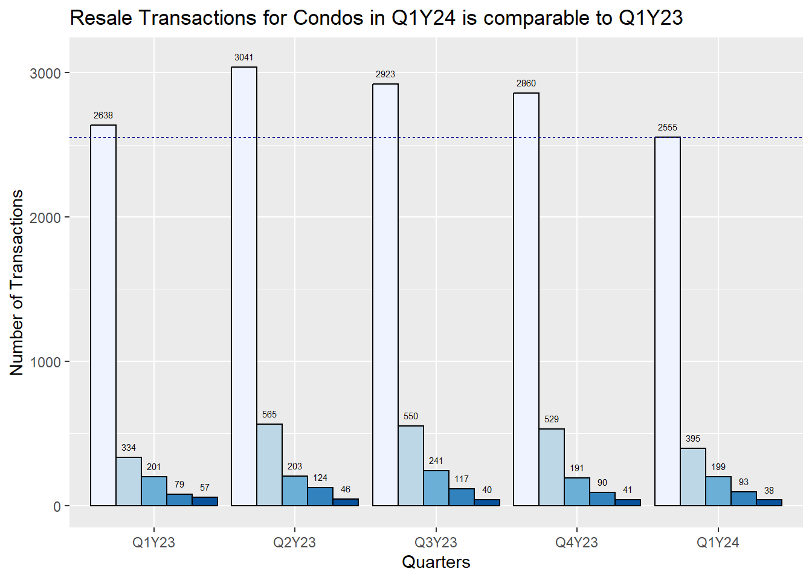
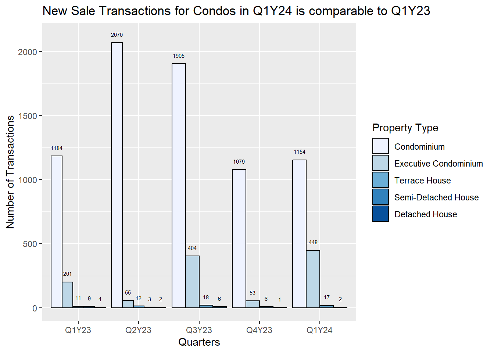
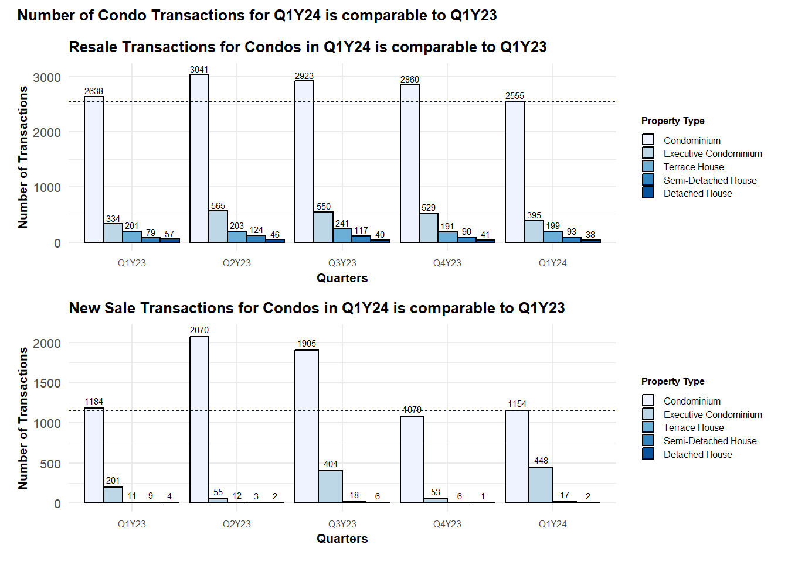
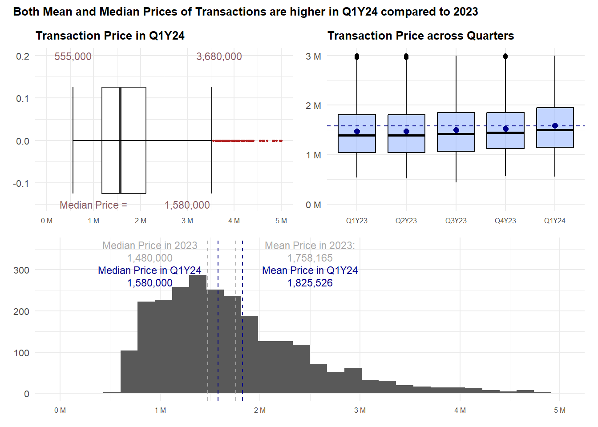

pacman::p_load(plotly, patchwork, hrbrthemes, ggrepel, tidyverse, ggpubr, scales)Take Home Ex 1
Take Home Ex 1
Creating data visualisation beyond default
The Task
Assuming the role of a graphical editor of a median company, you are requested to prepare minimum two and maximum three data visualisation to reveal the private residential market and sub-markets of Singapore for the 1st quarter of 2024.
1 Data Preparation
1.1 Loading the Required Packages
1.2 Examining and Preparing the Data
We first read the 5 .csv files provided. These are separate csv files containing data of each of the quarters from 2023 to Mar 2024.
As such, we will use the following code chunk to import the data and combine them into a single dataset.
df <- list.files(path="data/csv", full.names = TRUE) %>%
lapply(read_csv) %>%
bind_rows After combining the dataset into df, we will also extract the Sale Date and code it accordingly to the quarters. E.g. Jan to Mar 23 will be Q1Y23 and so on.
df <- df %>%
mutate(sale_date = as.Date(`Sale Date`, format = "%d %b %Y"),
quarter = paste0("Q", quarter(sale_date), "Y", format(sale_date, "%y")))%>%
mutate(
quarter = factor(quarter, levels = c("Q1Y23", "Q2Y23", "Q3Y23", "Q4Y23", "Q1Y24"))
)I also like to rename some of the columns headers so that it is easier to type into the codes later, especially removing the space in between.
realis2324 <- df %>%
rename(
unit_psm = 'Unit Price ($ PSM)',
unit_area = 'Area (SQM)',
property_type = `Property Type`,
sale_type = `Type of Sale`,
planning_region = `Planning Region`,
planning_area = `Planning Area`,
trans_price = `Transacted Price ($)`
)1.3 Check Data for Duplicated, Missing Values
First, we check if there are any missing values in the dataset.
# Check for missing values
missing_values <- realis2324 %>%
summarise_all(~ sum(is.na(.)))
# Display columns with missing values
print(missing_values)# A tibble: 1 × 23
`Project Name` trans_price `Area (SQFT)` `Unit Price ($ PSF)` `Sale Date`
<int> <int> <int> <int> <int>
1 0 0 0 0 0
# ℹ 18 more variables: Address <int>, sale_type <int>, `Type of Area` <int>,
# unit_area <int>, unit_psm <int>, `Nett Price($)` <int>,
# property_type <int>, `Number of Units` <int>, Tenure <int>,
# `Completion Date` <int>, `Purchaser Address Indicator` <int>,
# `Postal Code` <int>, `Postal District` <int>, `Postal Sector` <int>,
# planning_region <int>, planning_area <int>, sale_date <int>, quarter <int>And also for any duplicated values.
# Check for duplicate rows
duplicate_rows <- realis2324 %>%
filter(duplicated(.))
# Display duplicate rows
print(duplicate_rows)# A tibble: 0 × 23
# ℹ 23 variables: Project Name <chr>, trans_price <dbl>, Area (SQFT) <dbl>,
# Unit Price ($ PSF) <dbl>, Sale Date <chr>, Address <chr>, sale_type <chr>,
# Type of Area <chr>, unit_area <dbl>, unit_psm <dbl>, Nett Price($) <chr>,
# property_type <chr>, Number of Units <dbl>, Tenure <chr>,
# Completion Date <chr>, Purchaser Address Indicator <chr>,
# Postal Code <chr>, Postal District <chr>, Postal Sector <chr>,
# planning_region <chr>, planning_area <chr>, sale_date <date>, …Because we are looking at transaction data of the properties, we also want to check the number of units sold in each row is equal to 1. Because any sales with more than 1 unit can indicate other sales types, like en-bloc etc.
all_units_equal_to_1 <- all(realis2324$`Number of Units` == 1)
if (all_units_equal_to_1) {
print("All values in the 'Number of Units' column are equal to 1.")
} else {
# Print values above 1
units_above_1 <- realis2324 %>%
filter(`Number of Units` > 1)
print("Values in the 'Number of Units' column above 1:")
print(units_above_1)
}[1] "Values in the 'Number of Units' column above 1:"
# A tibble: 12 × 23
`Project Name` trans_price `Area (SQFT)` `Unit Price ($ PSF)` `Sale Date`
<chr> <dbl> <dbl> <dbl> <chr>
1 N.A. 32200000 14123. 2280 02 May 2023
2 KEW LODGE 66800000 25177 2653 23 May 2023
3 N.A. 6150000 4342. 1416 19 Jun 2023
4 N.A. 10600000 6747. 1571 26 Jun 2023
5 CLAYMORE PLAZA 7000000 4209. 1663 27 Feb 2024
6 BAGNALL COURT 115280000 68491. 1683 04 Jan 2023
7 MONDO MANSION BUI… 6280000 5490. 1144 18 Jan 2023
8 MEYER PARK 392180000 144883. 2707 09 Feb 2023
9 N.A. 61080008 32149. 1900 21 Mar 2023
10 EAST VIEW GARDEN 6100000 8338. 732 17 Jul 2023
11 N.A. 8000000 3659. 2187 28 Jul 2023
12 KARTAR APARTMENTS 18000000 6964. 2585 11 Oct 2023
# ℹ 18 more variables: Address <chr>, sale_type <chr>, `Type of Area` <chr>,
# unit_area <dbl>, unit_psm <dbl>, `Nett Price($)` <chr>,
# property_type <chr>, `Number of Units` <dbl>, Tenure <chr>,
# `Completion Date` <chr>, `Purchaser Address Indicator` <chr>,
# `Postal Code` <chr>, `Postal District` <chr>, `Postal Sector` <chr>,
# planning_region <chr>, planning_area <chr>, sale_date <date>, quarter <fct>We have 12 rows with the number of units > 1. Given that we are not able to divide the sales data accordingly by the number of units etc, we will remove these data instead.
realis2324_cleaned <- realis2324 %>%
filter(`Number of Units` <= 1)1.4 Reviewing the Property Type
When we look at the data, we can see that there are five property types indicated:
Apartment
Condominium
Detached House
Executive Condominium
Semi-Detached House
Terrace House
Executive Condominium is a mix between public and private housing so we will leave it as such in case we want to exclude it from further analysis. However, when we look at Apartment and Condominium, we realised that there is not much difference; e.g. one of the Apartment is Lentor Modern which is actually listed as a Condominium on its website. For the purpose of our study, we can therefore combine apartment and condominium as one same group - condo.
realis2324_cleaned$property_type <- ifelse(realis2324_cleaned$property_type == "Apartment", "Condominium", realis2324_cleaned$property_type)
realis2324_cleaned <- realis2324_cleaned %>%
mutate(
property_type = factor(property_type, levels = c("Condominium", "Executive Condominium", "Terrace House", "Semi-Detached House", "Detached House"))
)1.5 Writing the data to rds file
We will then write the data into a rds format.
write_rds(realis2324_cleaned, "data/rds/realis2324_cleaned.rds")2 Data Visualisation
Reading the file from rds.
realis2324_cleaned <- read_rds ("data/rds/realis2324_cleaned.rds")2.1 Overview of the Private Property Transactions in Q1Y24
We will first start by providing an overview of the private property transactions in the Quarter 1 2024, by trying to answer the following questions:
- What is the proportion of sales in terms of property type across the quarters? We know that the bulk of transactions would involve Condominiums given their availability as compared to landed properties, but we also want to know the difference between resales/sub-sale as compared to new sales.
Code
g1 <- ggplot(subset(realis2324_cleaned, sale_type %in% c("Resale", "Sub Sale")), aes(x = quarter, fill = property_type)) +
geom_bar(position = "dodge", color = "black") +
geom_text(
aes(label = ..count.., y = ..count.. + 50 ),
stat = "count",
size = 2,
position = position_dodge(0.9),
vjust=0)+
theme(legend.position="none")+
labs(
title = "Resale Transactions for Condos in Q1Y24 is comparable to Q1Y23",
x = "Quarters",
y = "Number of Transactions"
) +
scale_fill_brewer(palette = "Blues", name = "Property Type")
g1
Code
g2 <- ggplot(subset(realis2324_cleaned, sale_type %in% "New Sale"), aes(x = quarter, fill = property_type)) +
geom_bar(position = "dodge", color = "black") +
geom_text(
aes(label = ..count.., y = ..count.. + 50 ),
stat = "count",
size = 2,
position = position_dodge(0.9),
vjust=0)+
labs(
title = "New Sale Transactions for Condos in Q1Y24 is comparable to Q1Y23",
x = "Quarters",
y = "Number of Transactions"
) +
scale_fill_brewer(palette = "Blues", name = "Property Type")
g2
p = (g1 / g2) +
plot_annotation('Number of Condo Transactions for Q1Y24 is comparable to Q1Y23')
p & theme_minimal()+
theme(legend.key.size = unit(0.3, 'cm'), #change legend key size
legend.key.height = unit(0.3, 'cm'), #change legend key height
legend.key.width = unit(0.3, 'cm'), #change legend key width
legend.title = element_text(size=6), #change legend title font size
legend.text = element_text(size=6),
title=element_text(size=8, face='bold'),
axis.text.x = element_text(size = 6),
axis.text.y = element_text(size = 8),
)
Important
From the graph, we can see that the number of transactions for condominiums is a lot higher as compared to landed properties, with the number of both resale and new sales in Q1Y24 comparable to that in Q1Y23.
There are a higher number of new sales in Q2 and Q3 of the year, which is probably explained by the period when the developers like to launch their sales. We can also see that the new sales of landed properties pale in comparison to that of condominiums.
2.2 Transaction Price on Resale Condos
Next, we ask the following questions about the resale prices of condos:
- Has the overall transaction price of properties, focusing on resale Condominiums increased across the quarter, and year on year comparison for Q1Y24 as compared to Q1Y23?
First we look at the data in 2023 and compute some statistical values.
condo_subset23 <- realis2324_cleaned %>%
filter(sale_type %in% c("Resale", "Sub Sale"),
property_type == "Condominium",
quarter %in% c("Q1Y23", "Q2Y23", "Q3Y23", "Q4Y23") )resale23_mean <- round(mean(condo_subset23$trans_price))
resale23_median <- round(median(condo_subset23$trans_price))condo_subset24 <- realis2324_cleaned %>%
filter(sale_type %in% c("Resale", "Sub Sale"),
property_type == "Condominium",
quarter %in% c("Q1Y24") )
resale24_mean <- round(mean(condo_subset24$trans_price))
resale24_median <- round(median(condo_subset24$trans_price))
ymax <- as.numeric(round((IQR(condo_subset24$trans_price)*1.5) +
quantile(condo_subset24$trans_price,0.75)))
ymin <- as.integer(min(condo_subset24$trans_price))Next, we plot the histogram and box plots of the transaction prices of the resale condos (including those sub set sales), up to a limit of $5 million.
Code
h_price <- ggplot(data= condo_subset24, aes(x= trans_price)) +
geom_histogram(bins=30) +
geom_vline(aes(xintercept = resale23_mean), col="darkgrey", linewidth=0.5, linetype = "dashed") +
annotate("text", x=2500000, y=360, label="Mean Price in 2023:",
size=3, color="darkgrey") +
annotate("text", x=2500000, y=330, label=format(resale23_mean, big.mark = ","),
size=3, color="darkgrey") +
geom_vline(aes(xintercept = resale23_median), col="darkgrey", linewidth=0.5, linetype = "dashed") +
annotate("text", x=900000, y=360, label="Median Price in 2023",
size=3, color="darkgrey") +
annotate("text", x=900000, y=330, label=format(resale23_median, big.mark = ","),
size=3, color="darkgrey") +
geom_vline(aes(xintercept = resale24_median), col="darkblue", linewidth=0.5, linetype = "dashed") +
annotate("text", x=900000, y=300, label="Median Price in Q1Y24",
size=3, color="darkblue") +
annotate("text", x=900000, y=270, label=format(resale24_median, big.mark = ","),
size=3, color="darkblue")+
geom_vline(aes(xintercept = resale24_mean), col="darkblue", linewidth=0.5, linetype = "dashed") +
annotate("text", x=2500000, y=300, label="Mean Price in Q1Y24",
size=3, color="darkblue") +
annotate("text", x=2500000, y=270, label=format(resale24_mean, big.mark = ","),
size=3, color="darkblue") +
scale_x_continuous(limits = c(0,5000000),labels = unit_format(unit = "M", scale = 1e-6)) +
labs(
x = "Transaction Price",
y = "Number of Transactions"
)Code
b_price <- ggplot(data = condo_subset24, aes(y = trans_price)) +
geom_boxplot(outlier.colour="firebrick", outlier.shape=16,
outlier.size=0.6, notch=FALSE, width = 0.25) +
coord_flip() + labs(y = "", x = "") +
scale_y_continuous(limits = c(0,5000000), labels = unit_format(unit = "M", scale = 1e-6)) +
theme(axis.text = element_blank(), axis.ticks = element_blank()) +
stat_boxplot(geom="errorbar", width=0.25) +
annotate("text", x=0.20, y=ymax, label=format(ymax, big.mark = ","),
size=3, color="lightpink4") +
annotate("text", x=0.20, y=ymin, label=format(ymin, big.mark = ","),
size=3, color="lightpink4") +
annotate("text", x=-0.15, y=3000000, label=format(resale24_median, big.mark = ","),
size=3, color="lightpink4") +
annotate("text", x=-0.15, y=1000000, label="Median Price =",
size=3, color="lightpink4")+
labs(title="Transaction Price in Q1Y24")Code
condo_subset2324 <- realis2324_cleaned %>%
filter(sale_type %in% c("Resale", "Sub Sale"),
property_type == "Condominium")
bp_price <- ggplot(data=condo_subset2324,
aes(y = trans_price, x= quarter)) +
geom_boxplot(colour ="black", fill="#88abff", alpha=0.5) +
geom_hline(aes(yintercept = resale24_median), col="darkblue", linewidth=0.5, linetype = "dashed") +
geom_point(stat="summary",
fun=mean,
colour ="darkblue",
size=2) +
scale_y_continuous(limits = c(0,3000000),labels = unit_format(unit = "M", scale = 1e-6))+
labs(title="Transaction Price across Quarters")resale_price24 <- (b_price | bp_price) / h_price
p1 <- resale_price24 + plot_annotation(title = "Both Mean and Median Prices of Transactions are higher in Q1Y24 compared to 2023")
p1 & theme_minimal() +
theme(title=element_text(size=8, face='bold'),
axis.text.x = element_text(size = 6),
axis.text.y = element_text(size = 8),
axis.title.y = element_blank(),
axis.title.x = element_blank(),
)
Important
From the graphs, we can observe that both the median and mean prices in Q1Y24 are higher as compared to that of 2023. The distribution of prices is also more right-skewed with the mean prices > median prices. When we look across the quarters, there also seem to be a gradual increase in the prices.
While the majority of the prices would fall between $1M to $2.2M, there are also quite a number of properties going for higher prices.
This is expected given that the transaction prices of properties are dependent on a variety of factors, mainly location, size of the units, age and many more.
2.3 Prices across Planning Regions
region_price <- ggplot(data = condo_subset24, aes(x = fct_infreq(planning_region))) +
geom_bar(stat = 'count', position = "dodge", fill = "lightblue") +
labs(
title = "Higher number of sales in Central Region",
y = "Number of Transactions"
)